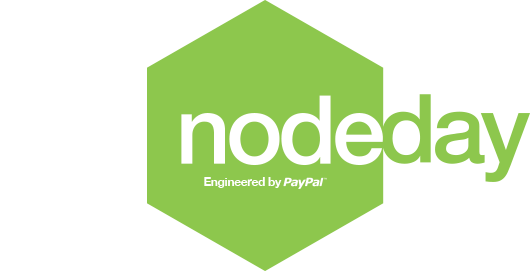

About NodeDay
Why focus on NodeJS in the Enterprise?
When it comes to NodeJS, the concerns of a 5-person startup are not the same as those of a 5000-person enterprise.
At NodeDay we will take on the topics that matter the most to large companies. If you have questions, we will have answers. Register today
Topics & Agenda
Everything you ever wanted to know
-
Keynote Address - 9:00 AM
"npm, inc." Who better that Eran to kick off a conference about NodeJS in the enterprise?
Video: http://youtu.be/lvZeY-xua70
Presentation: http://hueniverse.com/2014/02/nodeday-slides-by-chris-carrasco/ -
State of Node - 9:30 AM
Toy language? Serious contender? Where does NodeJS and its ecosystem stand today? NodeJS Project lead TJ Fontaine tells you where we are, and were we're headed.
Video: http://youtu.be/KXxUNk2XFr8
-
Security - 10:00 AM
What you don't know can make life hard for you. Adam talks about security in large deployments of NodeJS.
Video: http://youtu.be/Zc8QvuRbdoQ
Presentation: http://www.slideshare.net/evilpacket/node-day-enterprise-nodejs-security -
The business case for Node - 11:00 AM
Joe McCann
COO - The Node Firm
NodeJS has been experiencing massive growth in the enterprise. But, is it right for your company?
Video: http://youtu.be/bqLXjNbMZpY
Presentation: http://www.slideshare.net/joemccann/the-business-case-for-node -
Moving a large developer workforce to NodeJS - 1:00 PM
Shifting a large organization like PayPal to NodeJS doesn't happen overnight. Erik shares the challenges involved and the solutions that arose from it.
Video: http://youtu.be/wk4sWG-jx08
Presentation: http://totherik.github.io/NodeDay2014/ -
Node App Lifecycle - 2:00 PM
Building a Node App from the ground up - What we did the second time
This is a talk about the lessons we learned building our first product with Node.js and how we rectified the issues we faced when we built our latest product. We will discuss the challenges of building maintainable code bases with Node.js, from development, to testing, to deploy, and how we've overcome those problems with tooling and policy.Video: http://youtu.be/ceQxrF6kso4
Presentation: https://s3.amazonaws.com/uploads.hipchat.com/8093/400074/WgeXBDGHQ2rPLis/NodeDay%20Slides.key -
Performance Sins of our Abstractions - 3:00 PM
Fine tuning your deployment for maximum performance is always a top priority. NodeJS's chief mechanic shows you how to put the pedal to the metal.
Video: http://youtu.be/l2aI4ZWBJng
Presentation: http://trevnorris.github.io/NodeDay/ -
You only need 100 lines of JavaScript - 4:00 PM
Stop repeating the mistakes of the past! JavaScript lets you do amazing things in very small amounts of code. Node.js lets you write server-side code in tiny mind-size pieces. We call them micro-services. Stop writing monolithic web apps! Break everything apart. Do one thing and do it well. You can run hundreds of Node processes. It's cool.
Video: http://youtu.be/1CNcXeW8HdQ
Presentation: https://dl.dropboxusercontent.com/u/1941918/richardrodger-nodeday-2014-d.key


Location
PayPal Town Hall
NodeDay will take place at PayPal HQ in the Town Hall building, which faces North First St. Park anywhere.
2161 North 1st Street, San Jose, CA (map)
Public Transit Info: PayPal Town Hall is directly across the street from the Karina Station of VTA/Light Rail in San Jose.
Register
What are you waiting for?
Node Day is sold out! You can go on the waiting list by using the registration link below. We will try our best to accomodate those on the waiting list.